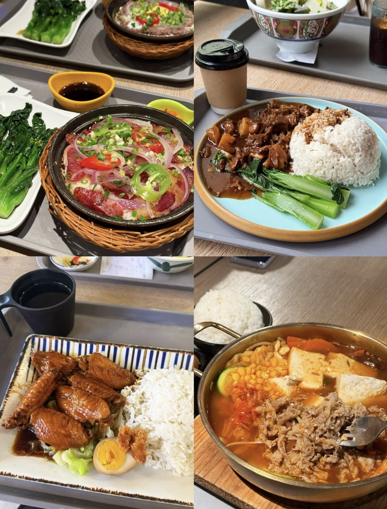
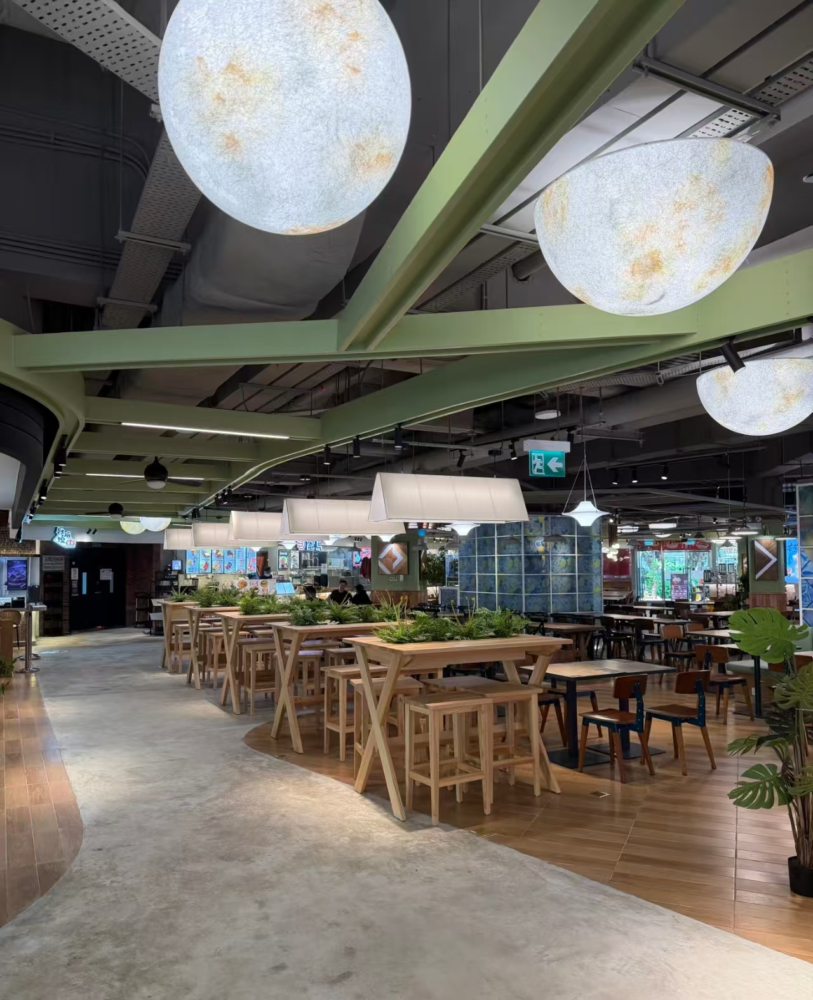

Check the conditions
Exclude over-budget dishes, known ingredient conflicts and dishes recorded as unavailable. When ingredient exclusions are set, unverified ingredient records are also excluded.
CAMPUS CANTEEN DISH RECOMMENDATION SYSTEM
A simpler way to choose what to eat on campus. Find dishes that fit your taste, budget and ingredient preferences.
Explore the projectTask 1 · Project proposal · October 2026

01 campus canteen planned
3–5 pilot stalls planned
40–60 dish records targeted
A focused pilot.
Scope depends on verified data.
01 / THE PROBLEM
Students compare taste, price, ingredients and stall location before choosing a meal. Our proposal brings that information together and narrows the options to a useful shortlist.
valid responses in our
proposal's survey snapshot
put taste first
42 of 96 respondents
would use or try a recommendation tool
88 of 96 respondents

Source: the team's 96-response survey snapshot, cited in the proposal. The sample is concentrated in third-year students and respondents from Central China; willingness to try is not evidence of actual adoption. View survey source
02 / THE PROPOSED EXPERIENCE
Planned for the initial release. Development and student trials will follow the proposal.
Set and save taste preferences, a budget and ingredients you exclude.
Browse by stall, price and tags. Check dish details, location and the latest verification date.
Receive up to five candidates, filtered by your restrictions and ranked by taste and personal feedback.
Save dishes, remove favorites and give feedback to inform later recommendations.
Authorized maintainers update dishes, prices and the latest known availability.
The first release focuses on choosing dishes. Payments, ordering, spending statistics, rankings and complaints are outside its scope. Nutrition references are an extension, subject to reliable source and portion information.
HOW THE RECOMMENDATION WILL WORK
Exclude over-budget dishes, known ingredient conflicts and dishes recorded as unavailable. When ingredient exclusions are set, unverified ingredient records are also excluded.
Rank the remaining dishes by taste compatibility and personal feedback, with specific reasons for each suggestion.
If nothing matches, say so. The student decides whether to change the conditions; the system will not silently relax them.
Availability reflects the latest check, not real-time stock. Recorded ingredients do not constitute allergen certification.
03 / THE WORK PLAN
Six weeks planned after proposal submission. Milestones remain subject to the course schedule.
Confirm scope, ownership, sample data and screen sketches.
Consult the assigned customer group; establish menu and preference workflows.
Connect filtering, ranking, explanations and empty results.
Integrate favorites, menu updates and access permissions.
Check rules, usability and selection time; fix major issues.
Complete documentation and test records; prepare the demonstration.
Proposed targets, not completed results:
04 / THE TEAM
Group 6 · Macau University of Science and Technology
Software Engineering · 2026
Four functional owners. Two working pairs.
Shared implementation, testing and documentation.
PAIR A + C
A · LIU KAIXI
Team lead · Accounts and preferences
C · RONG KEYI
Filtering, ranking and explanations
PAIR B + D
B · LIU SIMIN
Menu search, dish details and maintenance
D · WEN FANGE
Favorites, feedback and personal records
This website introduces the course project at proposal stage. It is not a live canteen service. Planned source collaboration: GitHub. Progress reporting: Feishu.